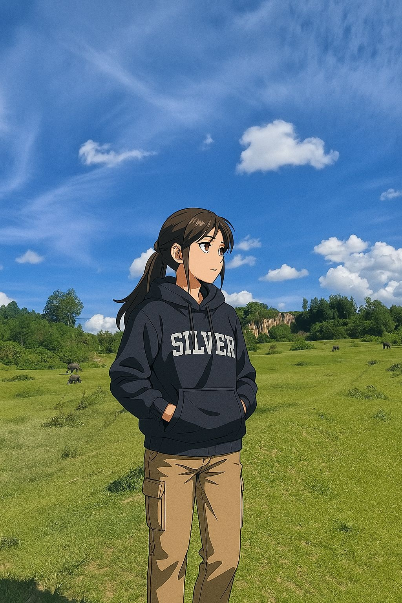
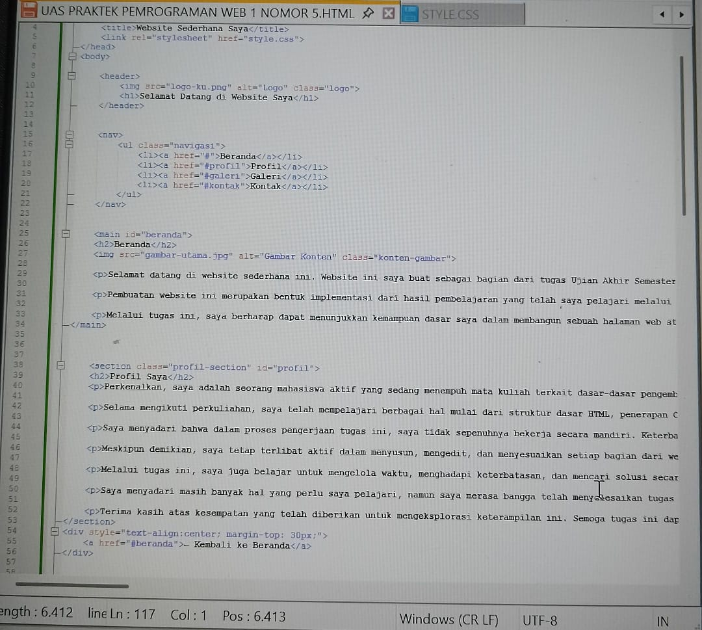
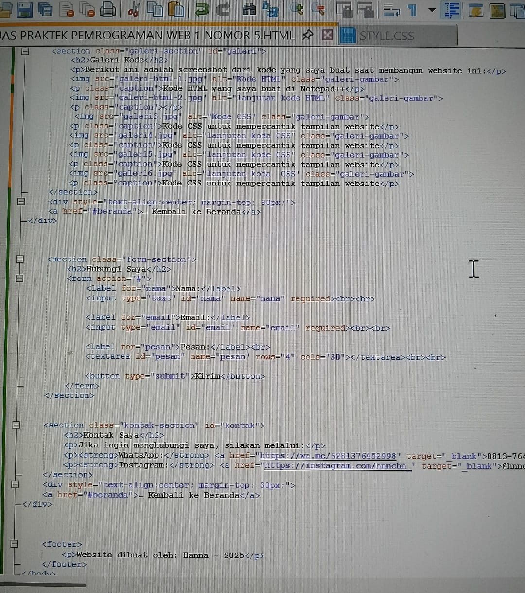
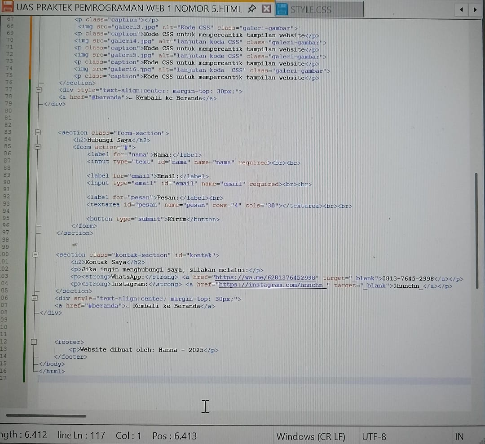
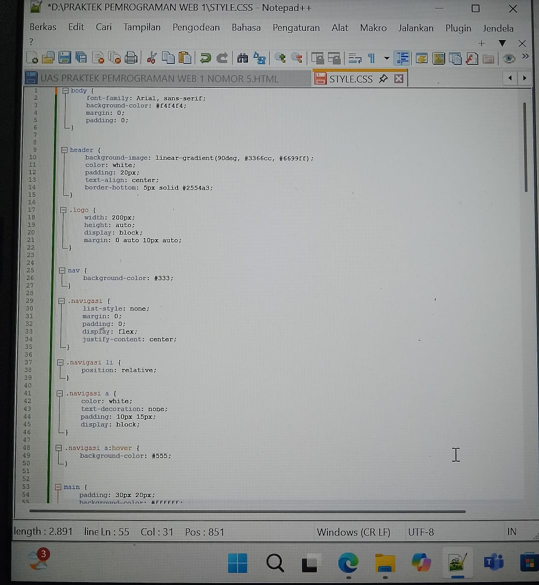
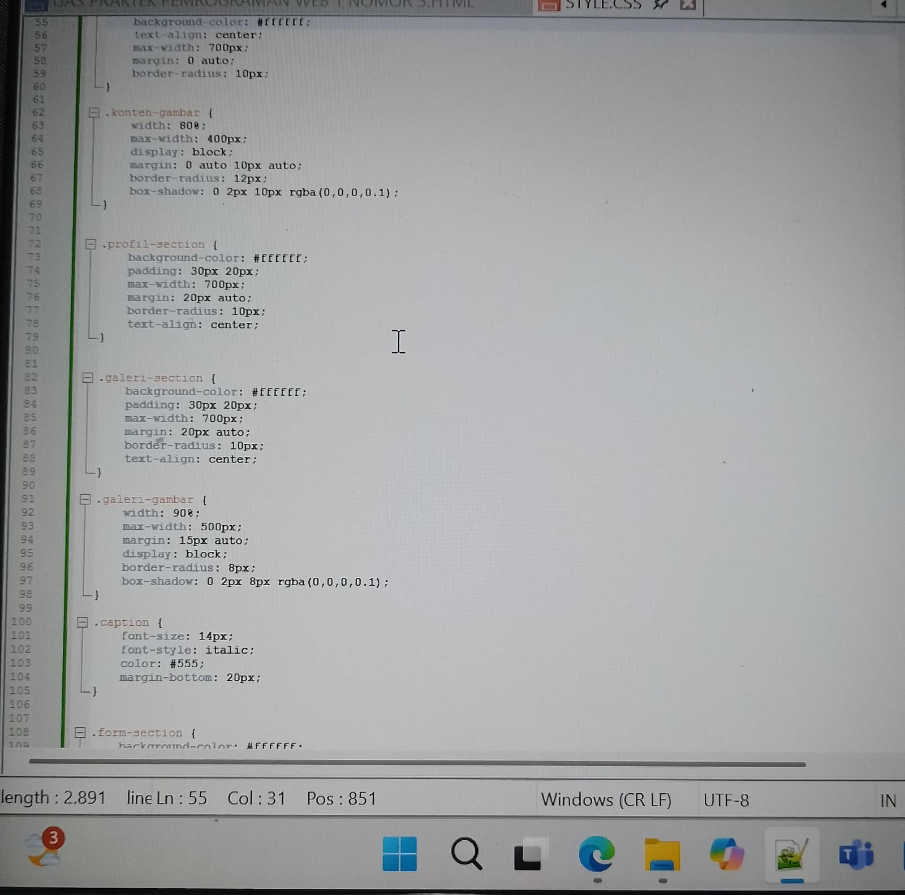
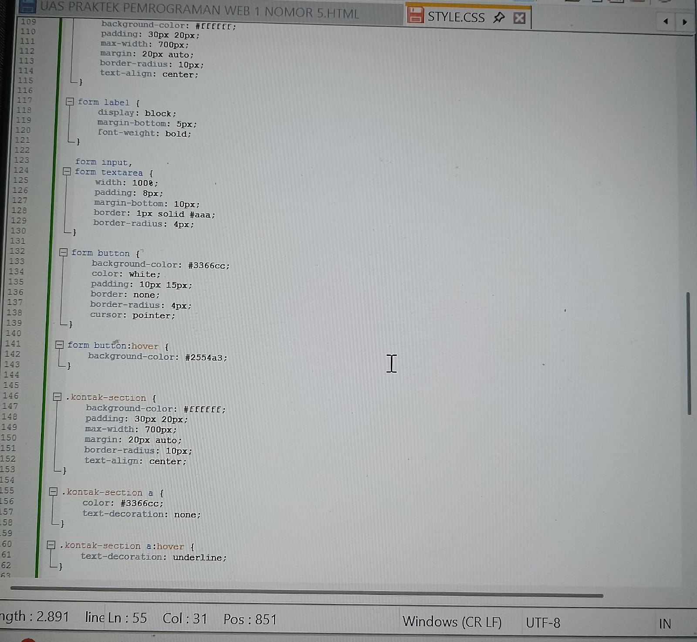
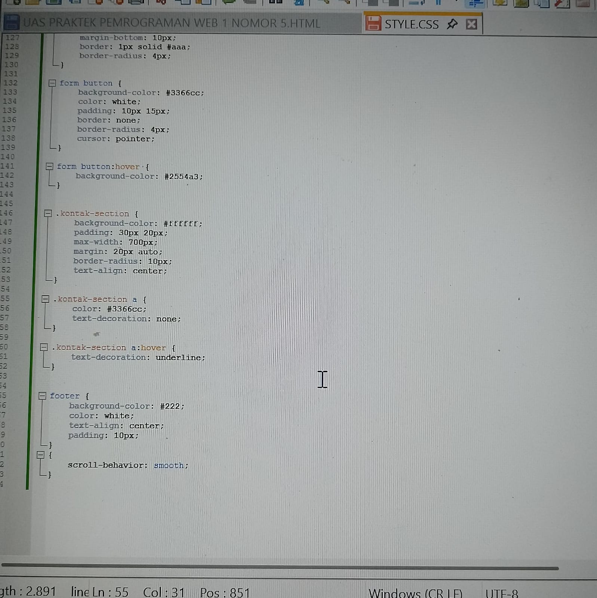

Beranda

Selamat datang di website sederhana ini. Website ini saya buat sebagai bagian dari tugas Ujian Akhir Semester (UAS) untuk mata kuliah terkait pemrograman web.
Pembuatan website ini merupakan bentuk implementasi dari hasil pembelajaran yang telah saya pelajari melalui beberapa modul selama perkuliahan berlangsung. Di dalamnya, saya mencoba menggabungkan pemahaman tentang struktur HTML, pengaturan tampilan dengan CSS, serta menyusun elemen-elemen dasar seperti navigasi, konten, galeri, dan form.
Melalui tugas ini, saya berharap dapat menunjukkan kemampuan dasar saya dalam membangun sebuah halaman web statis serta menampilkan hasil belajar saya selama ini. Semoga tugas ini dapat diterima dengan baik dan memberikan gambaran atas pemahaman saya terhadap materi yang telah diajarkan.
Profil Saya
Perkenalkan, saya adalah seorang mahasiswa aktif yang sedang menempuh mata kuliah terkait dasar-dasar pengembangan web. Website ini merupakan bagian dari tugas Ujian Akhir Semester (UAS) yang saya kerjakan untuk menunjukkan pemahaman saya terhadap materi yang telah dipelajari.
Selama mengikuti perkuliahan, saya telah mempelajari berbagai hal mulai dari struktur dasar HTML, penerapan CSS untuk mempercantik tampilan, hingga menyusun elemen-elemen web seperti navigasi, galeri, dan form. Pengerjaan tugas ini menjadi sarana bagi saya untuk mengasah kembali keterampilan tersebut secara praktis.
Saya menyadari bahwa dalam proses pengerjaan tugas ini, saya tidak sepenuhnya bekerja secara mandiri. Keterbatasan waktu dan pemahaman yang belum sepenuhnya mendalam membuat saya perlu mencari bantuan tambahan, termasuk melalui diskusi, referensi online, serta teknologi berbasis AI seperti ChatGPT untuk memahami bagian-bagian yang belum saya kuasai dengan baik.
Meskipun demikian, saya tetap terlibat aktif dalam menyusun, mengedit, dan menyesuaikan setiap bagian dari website ini dengan pemahaman saya sendiri. Bantuan yang saya gunakan hanya sebagai pendukung proses belajar, bukan sebagai pengganti. Saya tetap bertanggung jawab atas hasil akhir dari tugas ini dan berharap apa yang saya sajikan dapat mencerminkan usaha dan kemauan saya dalam memahami materi yang telah diajarkan.
Melalui tugas ini, saya juga belajar untuk mengelola waktu, menghadapi keterbatasan, dan mencari solusi secara mandiri maupun kolaboratif. Proses pembelajaran ini menjadi pengalaman yang sangat berharga, yang tidak hanya menambah wawasan teknis, tetapi juga membentuk sikap disiplin dan tanggung jawab.
Saya menyadari masih banyak hal yang perlu saya pelajari, namun saya merasa bangga telah menyelesaikan tugas ini dengan semangat dan niat yang sungguh-sungguh. Besar harapan saya agar website ini dapat menjadi cerminan dari progres belajar saya, meskipun masih sederhana dan belum sempurna.
Terima kasih atas kesempatan yang telah diberikan untuk mengeksplorasi keterampilan ini. Semoga tugas ini dapat diterima dengan baik dan memberikan kesan positif terhadap semangat saya dalam mengikuti proses pembelajaran.
Galeri Kode
Berikut ini adalah screenshot dari kode yang saya buat saat membangun website ini:

Kode HTML yang saya buat di Notepad++


Kode CSS untuk mempercantik tampilan website

Kode CSS untuk mempercantik tampilan website

Kode CSS untuk mempercantik tampilan website

Kode CSS untuk mempercantik tampilan website

Kode CSS untuk mempercantik tampilan website